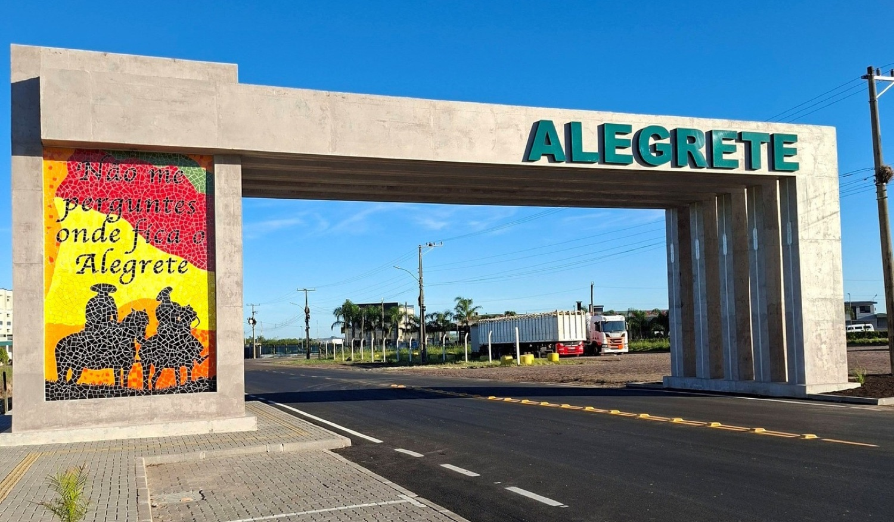
aqui a vida é melhor
Terra de horizontes largos, história viva e cultura gaúcha pulsante — onde cada experiência vai além do que se vê à primeira vista.
Reconhecida como uma das cidades mais gaúchas do Rio Grande do Sul e também a 3ª Capital Farroupilha, Alegrete carrega as tradições e o orgulho do povo do Pampa.
A qualidade de vida se destaca no ritmo tranquilo do dia a dia, nos espaços ao ar livre e no contato com a natureza — enquanto a cidade surpreende com gastronomia diversa e uma vida noturna animada.
Do folclore gaúcho às praças centenárias, os marcos que dão alma a Alegrete.
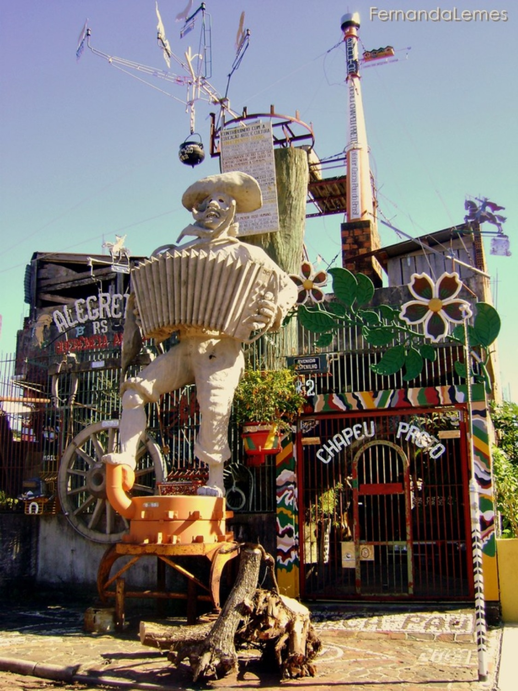
Um dos símbolos mais reconhecidos da identidade cultural alegretense, inspirado na figura do gaúcho.
Av. Espinilho, 83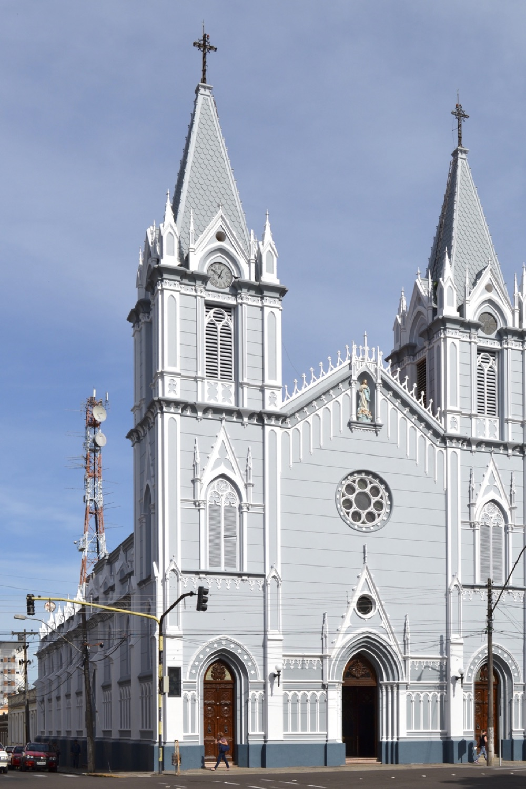
Inaugurada em 1919, com arquitetura imponente e rica em detalhes, no coração da cidade.
Praça Getúlio VargasSobre o Rio Ibirapuitã, um dos cartões-postais — vista privilegiada do Pampa.
Próximo ao Parque Rui RamosÍcaro Ferreira da Costa — imersão na cultura e nas tradições do povo gaúcho.
R. Santa Catarina, 130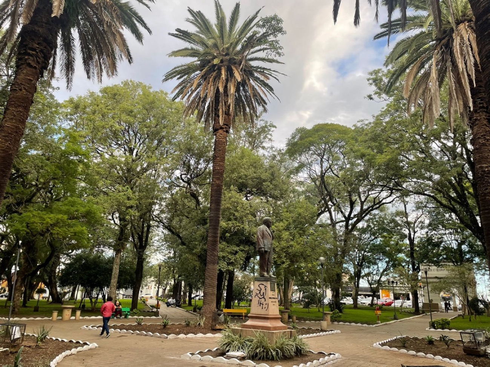
A Praça Central, coração arborizado da cidade — história, lazer e convivência.
CentroO “Picolé do Adão”, com 17 metros, celebra o sesquicentenário da Revolução Farroupilha.
Av. Tiaraju, 659Escolha um caminho — cada parada é um convite para sentir o Baita Chão.
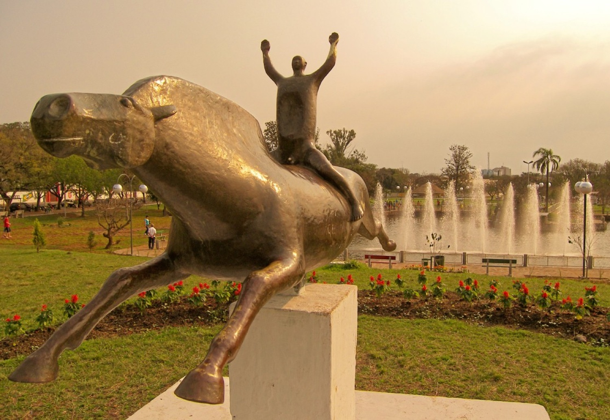
Monumentos, museus, praças e os cartões-postais da cidade.
Explorar →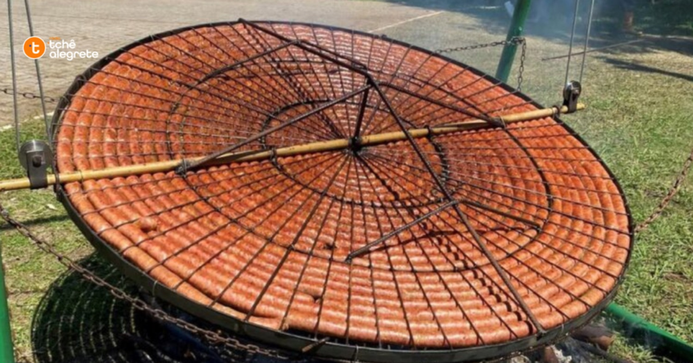
Capital da Linguiça, churrasco de chão e os melhores endereços.
→Centros de Tradições Gaúchas, piquetes e a alma farroupilha do Pampa.
→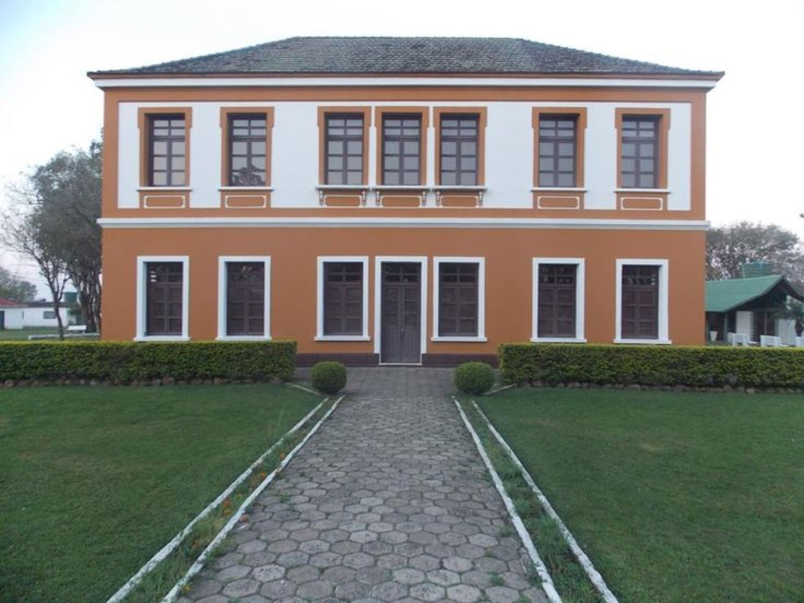
Hotéis, pousadas, cabanas e camping para todos os estilos.
→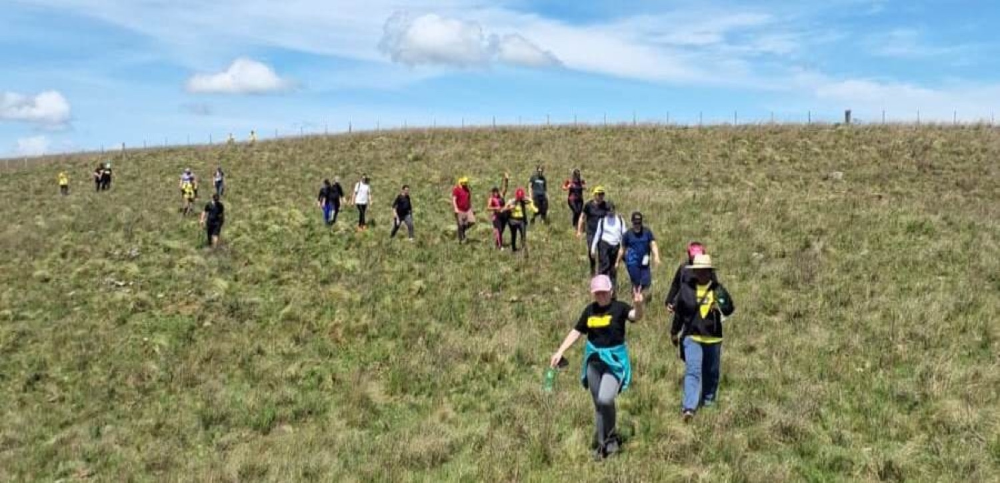
Rios, trilhas do Pampa e o Caminho do Pampa de longo curso.
→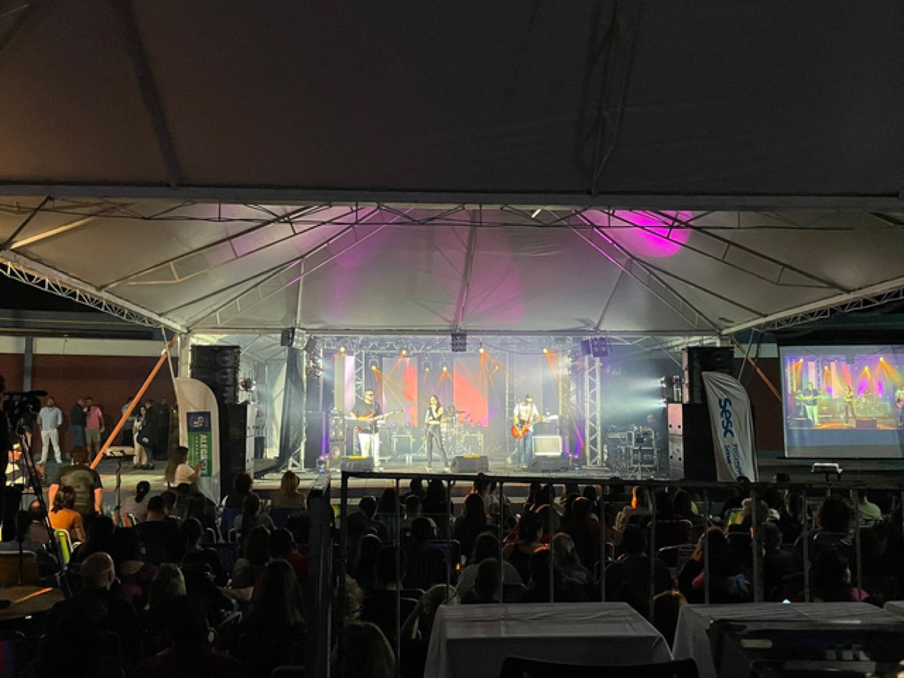
Campereada, Festival da Linguiça, Semana Farroupilha e EFIPAN.
→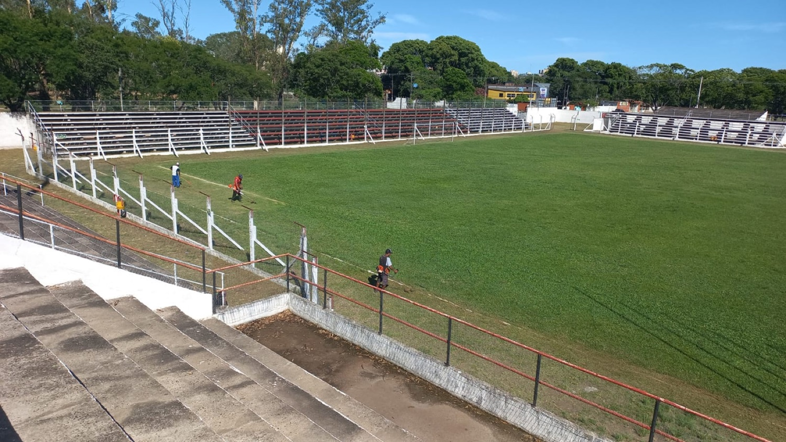
Corridas, caiaque no Pampa, hipismo e o Estádio Farroupilha.
→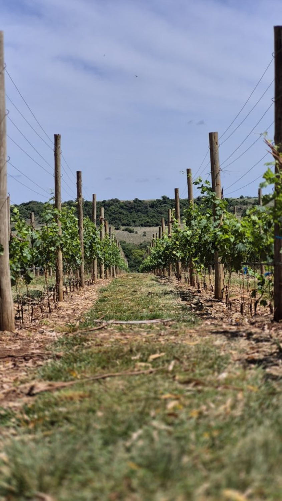
Vinhas do Alegrete, fronteira com Uruguai e Argentina.
→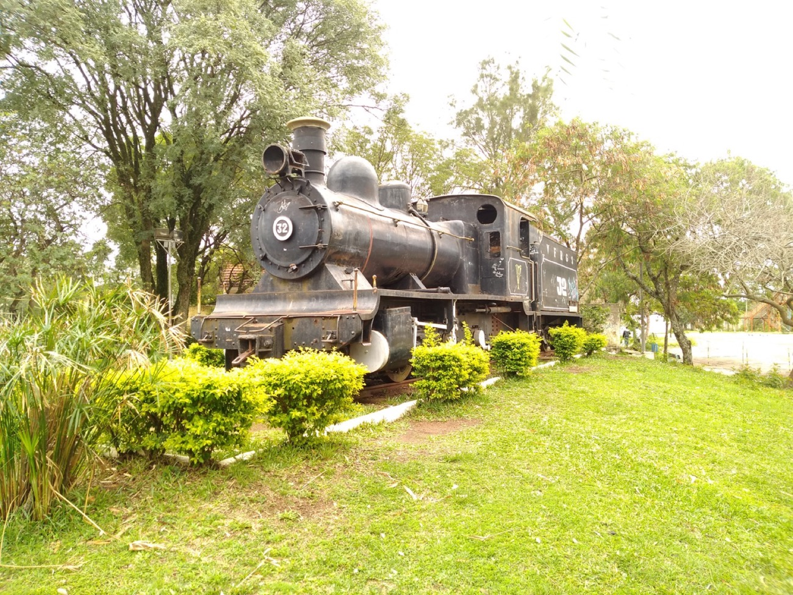
Farrapos, ferrovia e a trajetória do Baita Chão.
→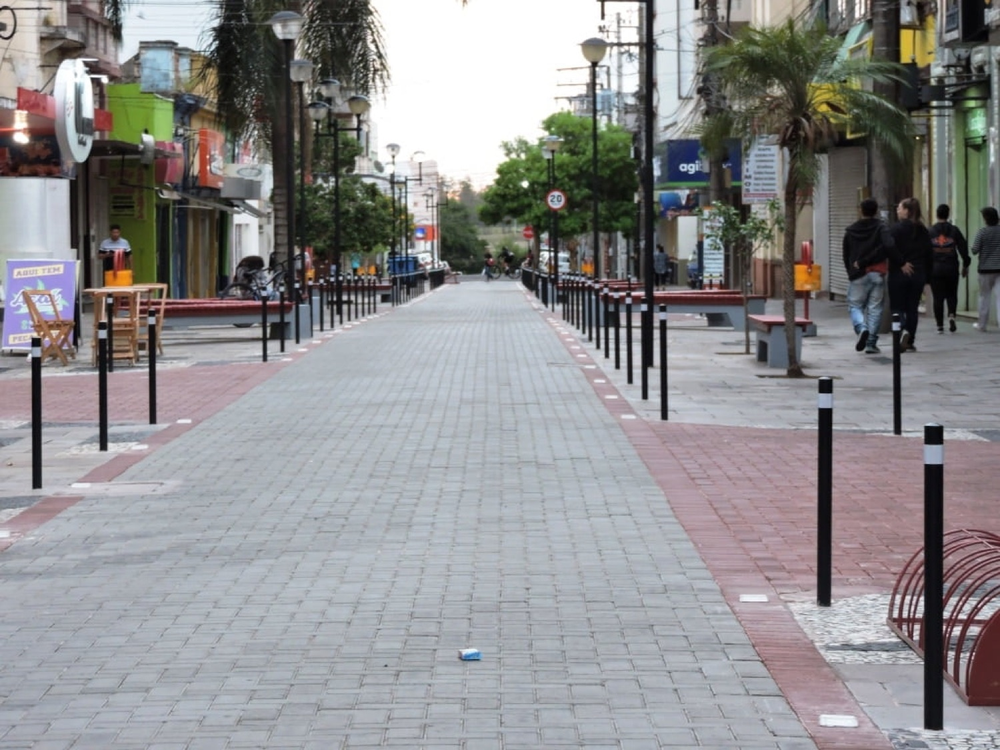
Rodoviária, aeroporto regional, rodovias e distâncias.
→Hospital de referência, pronto atendimento e postos de saúde no mapa.
→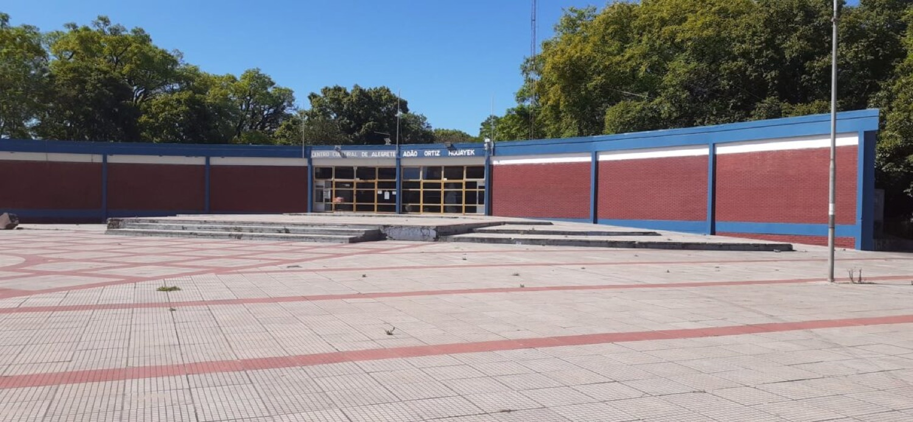
Unipampa, IFFar, URCAMP, Pampatec e a Casa do Estudante.
→Da linguiça tradicional campeira às parrillas e cafés — e um descanso à altura do Pampa.
Tradição, sabor, esporte e cultura marcam o calendário alegretense.
Quer saber mais? Fale com o turismo oficial e viva essa experiência.